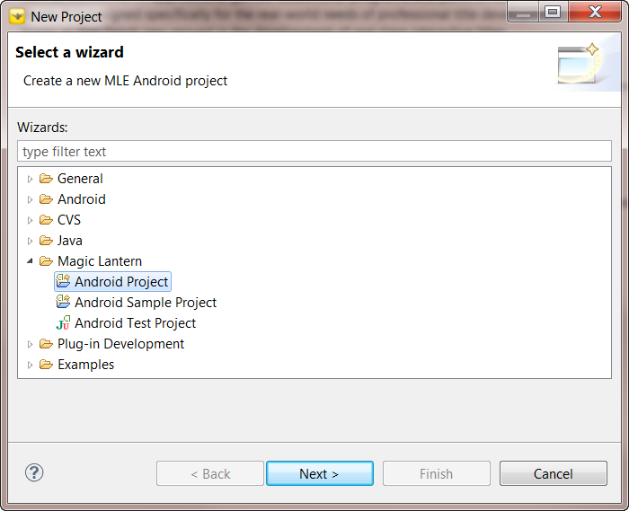
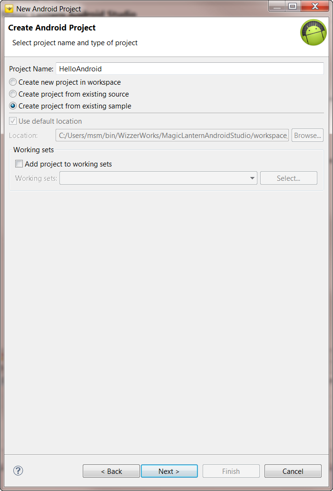
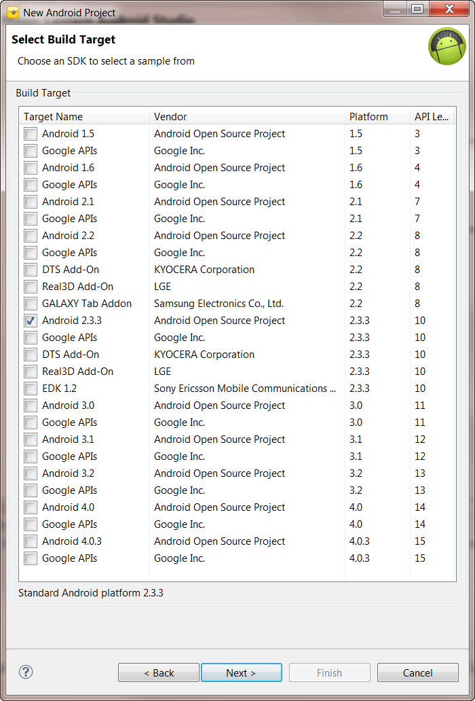
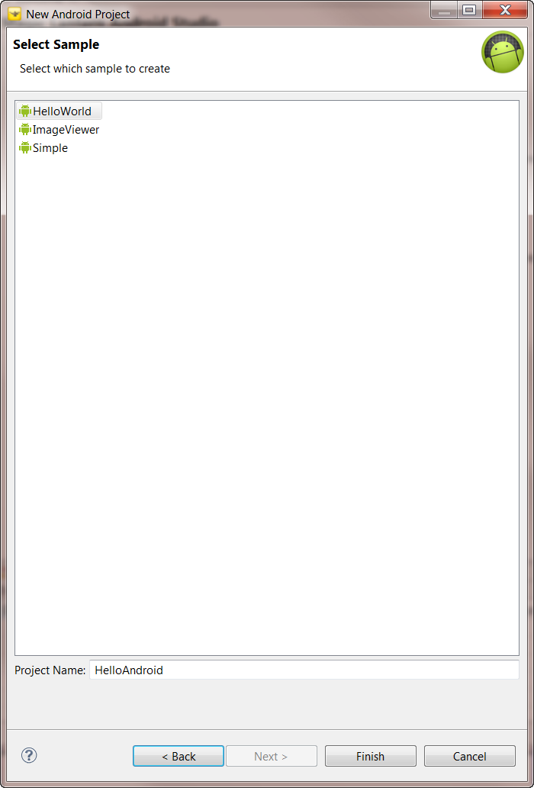
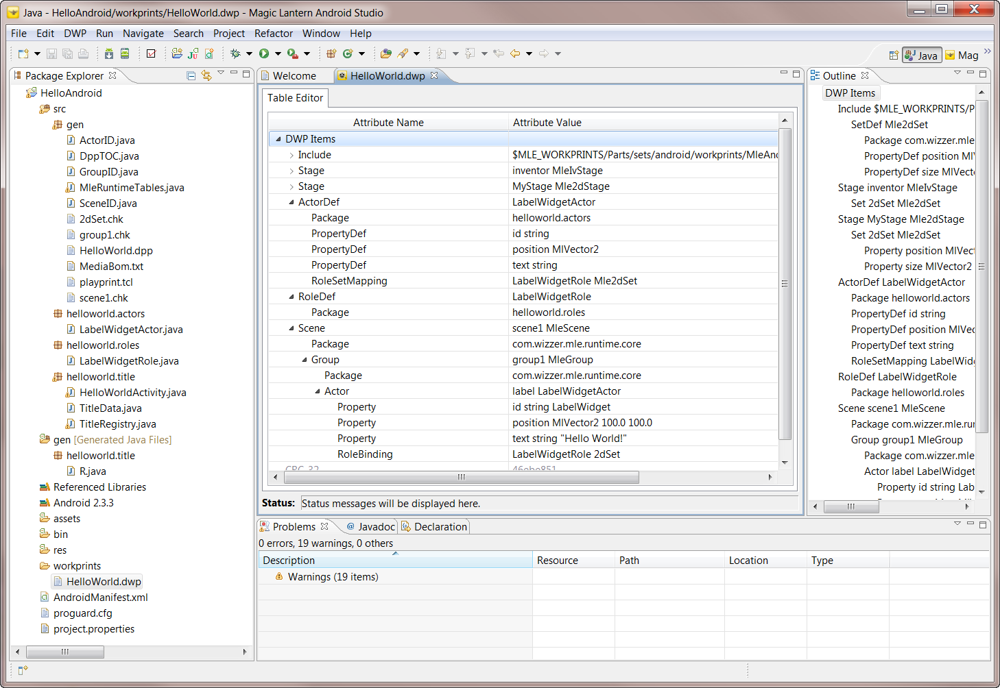

HelloAndroid Sample Application
This document discusses how to create a Magic Lantern Android title using the the HelloAndroid sample application.
Creating the HelloAndroid Title
Follow these steps to create a HelloAndroid title:
-
Select "File->New->Project..."
from the main Eclipse menu toolbar. This will bring up a New wizard selection
dialog box (see Figure 2.1).

Figure 2.1: New Wizard Selection Dialog
- Select the "Magic Lantern" category
to list the Magic Lantern wizard selections.
- Double-click on "Android Project"
to select the New Magic Lantern Android Project wizard. Figure 2.2
shows the new wizard.

Figure 2.2: New Magic Lantern Project Wizard
- Type in the name of the project. For example, Figure 2.2 shows HelloAndroid
being used. Also, select "Create project from existing sample" to
indicate that the title will be derived from a sample application.
- Select the "Next >" buton to continue.
The wizard proceeds to the next page, displaying the dialog for selecting the Android target SDK.
This version of Magic Lantern only supports version 2.3.3. As shown in Figure 2.3, select the
Android 2.3.3 target platform.

Figure 2.3: Android Target Selection
- Select the "Next >" buton to continue.
You should now be seeing a dialog page of existing sample titles for the Android 2.3.3 platform.

Figure 2.4: Sample Application Selection
- Select the HelloWorld sample and then the "Finish"
buton to wrap-up creating the project. This will create the project and master the HelloWorld
Sample application for the Android 2.3.3 target.
The wizard will ask you if you wish to change perspectives from the Magic
Lantern Studio Perspective to the Java Perspective.
Select "Yes" to switch perspectives.
- The HelloAndroid project should now appear in the Package Explorer on the
left-hand side of the Java perspective. If you expand the project hierarchy,
you should see something like Figure 2.5.

Figure 2.5: HelloAndroid Project
The title consists of a Stage with a single Set for 2-dimensional rendering.
The Stage is implemented as a Android View. The title implements a
Actor, the LabelWidgetActor, which is used to display
the "Hello World" string. The actor is rendered on the 2D Set via the
LabelWidgetRole.
Executing the title will display the string Hello World!.
Title Structure
The top level directories, src and gen in Figure 2.5, contain
the source that was generated by the sample application. The main title source is found in the
src/helloworld.title, src/helloworld.actors,
src/helloworld.roles, and gen packages.
The second gen directory, located under src, is where the
mastered elements exist. The mastered elements were generated from the Digital
Workprint located in the workprints directory. The Digital
Workprint for this example is called HelloWorld.dwp.
For more information concerning the title components, please read the section
on "Title Structure".
Executing the Title
To execute the title, you will need to create an Android launch configuration.
If you are anxious to see this title run, then please proceed to "Executing
the Title".